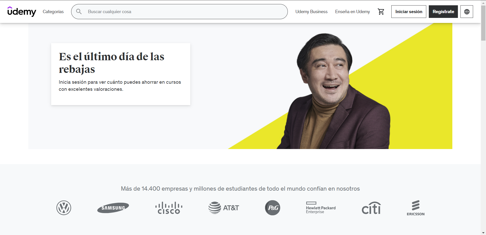
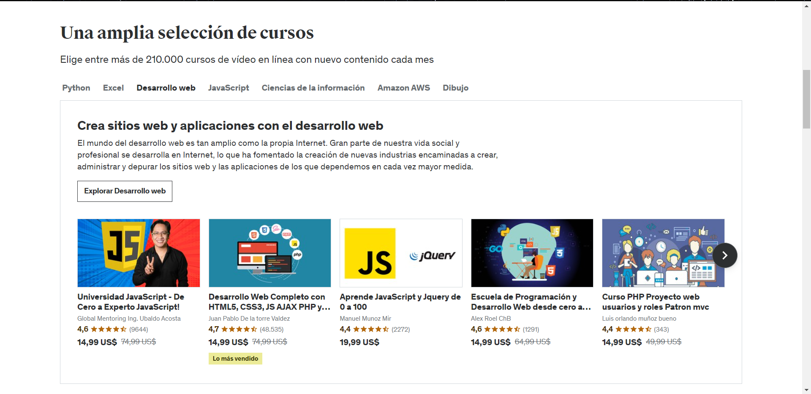
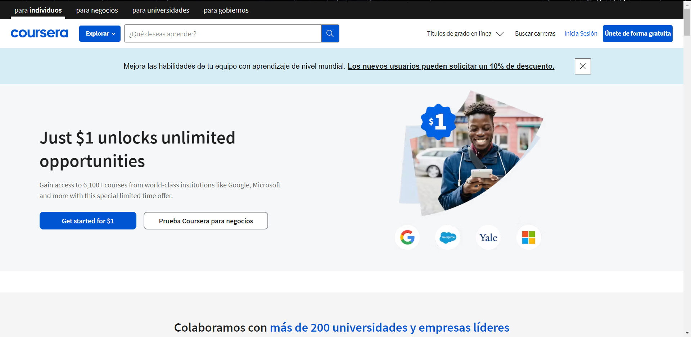
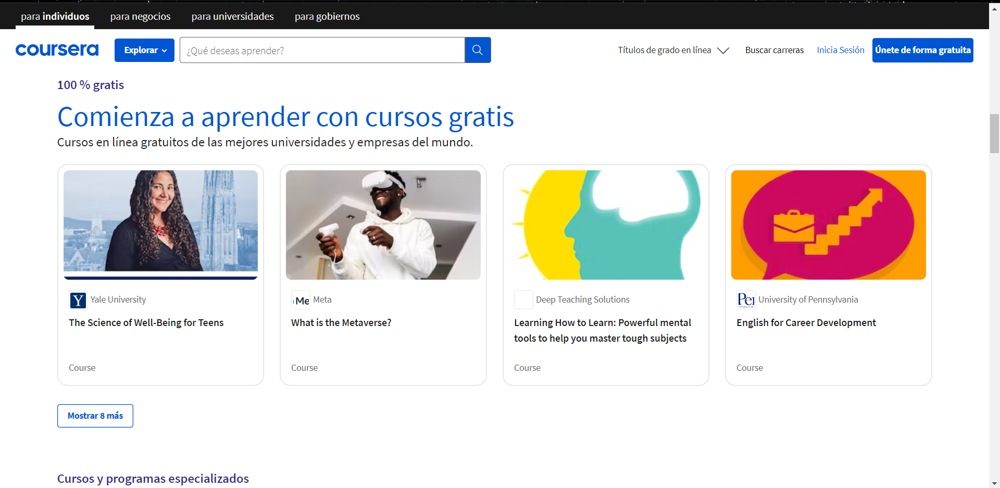

La programación es el proceso que se lleva a cabo para desarrollar algún tipo de aplicación, web o software, para representar un concepto o un proyecto que requiere del uso de un lenguaje informático para realizarse. Este proceso sucede cuando un profesional (programador o developer) desarrolla, modifica, protege o distribuye un programa, web o software informático.
Un desarrollador web crea una aplicación que los usuarios consumen desde un navegador como Google Chrome, por lo que las personas solo tienen que escribir la dirección y listo, no tienen que instalar nada. Por ejemplo: Youtube, Netflix, Facebook y EDteam, para ver tus cursos y aprender tecnología. Todas las páginas que funcionan en el navegador son web. Ahora, un programador móvil crea una app para que los usuarios la instalen en sus teléfonos desde una tienda, por lo que hay que subirla a la App Store, si es para Apple o a la Play Store, si es para Android. En el caso de las aplicaciones web no se suben a una tienda sino a la nube y desde allí los usuarios la pueden consumir con su navegador.
Una base de datos es una recopilación organizada de información o datos estructurados, que normalmente se almacena de forma electrónica en un sistema informático. Normalmente, una base de datos está controlada por un sistema de gestión de bases de datos
Ambos términos son de origen anglosajón y significan “experiencia de usuario” e “interfaz de usuario”. Estamos hablando de dos conceptos diferentes que se suelen agrupar porque ambos tratan sobre la percepción del usuario. ¿Y por qué decimos que son diferentes? Porque la experiencia de usuario - UX por sus siglas en inglés - es la forma como nos sentimos al usar un producto y la interfaz de usuario - UI por sus siglas en inglés - es lo que vemos de un producto cuando lo usamos.
La inteligencia artificial hace referencia a sistemas informáticos que buscan imitar la función cognitiva humana a
través de máquinas, procesadores y softwares con el objetivo de realizar tareas de procesamiento y análisis de datos.
En términos sencillos, se trata de máquinas diseñadas para razonar, aprender, realizar acciones y resolver problemas.
La IA integra un diseño de programación que es capaz de almacenar información sobre determinada área para convertirla en conocimiento e implementarla en el día a día de la actividad humana.
La IA abarca desde softwares —como asistentes virtuales, motores de búsqueda o sistemas de reconocimiento de
voz y rostro— hasta sistemas integrados —como robots, drones y vehículos autónomos.
El programador de videojuegos es un desarrollador de software, puede ser una persona o empresa, que
crea videojuegos para diversas plataformas como videoconsola o computadora personal.
La seguridad informática es el conjunto de tecnologías, procesos y prácticas diseñadas para la protección de redes, dispositivos, programas y datos en caso de algún ciberataque, hackeo, daño o acceso no autorizado.
Ser autodidacta significa tener la capacidad de pasar por ese proceso de aprendizaje de forma autónoma e independiente. Dicho de otro modo el autodidacta es una persona que aprende sola sobre algún asunto o que desarrolla alguna habilidad o competencia por cuenta propia.
Lo único que necesitas para aprender programación desde cero es ser un buen autodidacta.
La lógica es la base para aquellos que se inician en el mundo de la programación. Sin embargo, para darle una definición a lo que sería Lógica de Programación analicemos primero que es Lógica y definamos también que es Programación.
Es el razonamiento de una sucesión de ideas o hechos desarrollados de una manera coherente sin que existan contradicciones entre ellas. En otras palabras, Lógica es organizar y relacionar de una manera coherente las ideas a aplicar.
Es la acción de realizar Programas. En informática es el desarrollo o creación de programas, software, sistemas o aplicaciones para un fin valioso; donde necesitamos siempre trabajar en un o varios lenguajes de programación.
Entendiendo cada concepto por separado, ahora podemos decir que "Lógica de Programación"
es la organización coherente de las instrucciones del programa para que su objetivo sea alcanzado o logrado.
Para poner en práctica la Lógica de Programación se deben desarrollar Algoritmos, en los cuales
se utilizan una serie de elementos que facilitan el entendimiento de cada paso a ejecutar, tales como:
Es un creador de contenido enfocado a la programacion el cual puso a disposicion un curso gratuito en donde te enseña la logica de programación paso a paso
Con estos 2 elementos ya puedes empezar, Visual Studio Code y Git.


Todos los desarrolladores deben tener conocimientos de HTML, CSS y JavaScript. Esos tres lenguajes son la base de casi todo lo que harás para crear una pagina Web.
HTML significa Lenguaje de Marcado de Hipertexto. Define la estructura de una página web. Por ejemplo, usarás HTML para indicar dónde van los encabezados, dónde poner un salto de párrafo y dónde insertar una imagen. Todo el texto y las imágenes que estás viendo en esta misma página son gracias al HTML.

CSS son las siglas de Cascading Style Sheets (hojas de estilo en cascada), y se ocupa del estilo. Por ejemplo, CSS puede dictar el color de fondo o la fuente. Puedes utilizar una única hoja de estilos CSS para definir los estilos en todo un sitio (es decir, en varias páginas a la vez).

Mientras que el HTML establece el marco y el CSS define el estilo, el JavaScript hace que un sitio web sea interactivo. Si un sitio web hace algo más que mostrar información estática, probablemente sea gracias a JavaScript. Por ejemplo, puedes usar JavaScript para crear un mapa que se actualice en tiempo real o para animar parte de tu sitio web.

Puedes elegir a innumerable creadores de contenido para apreder a programar de forma gratuita y con una calidad exelente aqui te dejo algunos creadores para seguir y aprendiendo
Existen paginas que ofrecen cursos gratuitos y con certificacion, por algunas de ellas
Si quieres acceder a los cursos gratuitos de udemy tienes que ganarte un cupo que son limitados que se encuentra disponibles en telegram
 Pagina web que ofrece curso de pago y gratuitos
 Estas son organizaciones te dan la oportunidad de acceder a una beca en donde te capacitaras enteramente en desarrollo de web